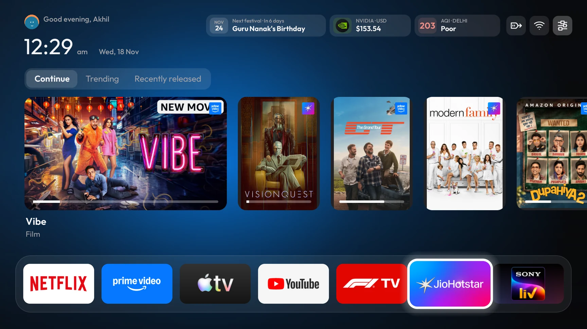
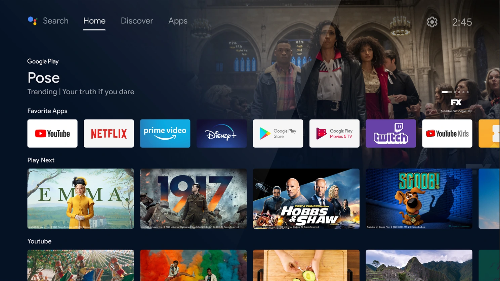
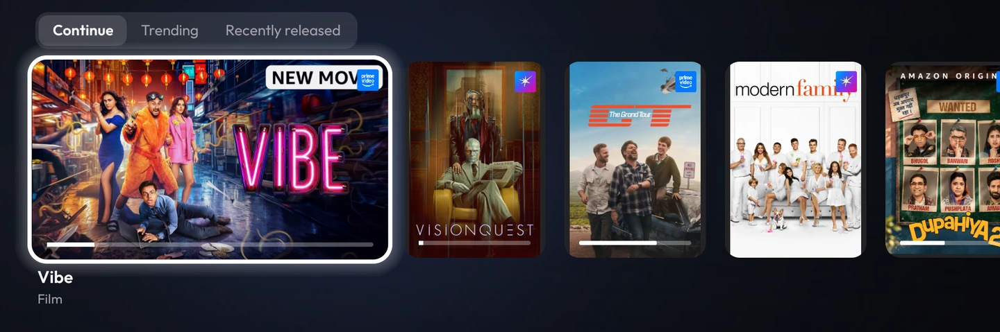
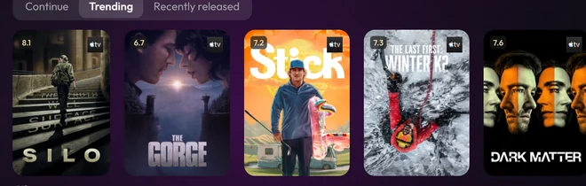
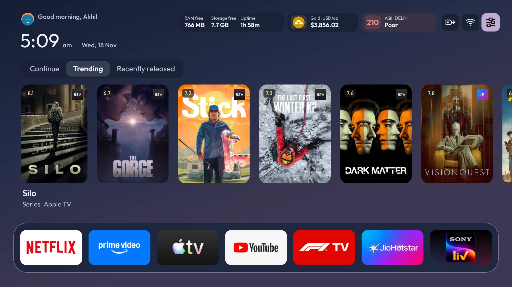

Formula 1
Race countdown, published session results, driver standings, and the last Grand Prix.
A lightweight, customisable home screen with picks from your streaming apps, powered by our recommendation engine.


BeforeSweepMyTVUse Claude, Codex, or another coding assistant on a computer connected to the same Wi-Fi as your Android TV or Google TV.
Settings → About → Build (press OK 7 times)
Go back to Developer options → Wireless debugging.
Open Finish setup in Sweep TV settings and allow permissions for the features you want to use.
Check scores, schedules, and standings from Home.
Race countdown, published session results, driver standings, and the last Grand Prix.
Three scorecards at a glance. Matches in progress come first, with recent or upcoming fixtures filling the row.
Built by SweepTV Beta V1
Your apps. Your languages. Better things to watch.
Our in-house recommendation engine brings together curated picks, popular titles and recent releases, then narrows them to the streaming apps and languages you choose.
Our own selection and ranking logic, built on third-party title metadata, ratings and streaming availability.
Picks are checked for artwork, title links and streaming availability. IMDb ratings appear when available, and Prime Video picks exclude rent-only titles.
Only Netflix and English selected? Recommendations stay within those choices, including the picks used to fill a shorter app row.
The shared catalogue refreshes every six hours, while your TV rotates its recommendations from the available pool.
Saved picks and artwork are reused on your TV. Ranking happens locally; the shared catalogue request sends no viewing history.
Beta V1 is being tested with the India catalogue. Availability depends on your build and streaming apps; coverage and picks may change as we refine the rules.
Disable selected trackers, promotional apps, and other bloatware, including unused packages and services from your TV maker. Save a restore list so you can undo the changes.
Across three warm navigation runs on this Redmi, Sweep TV’s 95th-percentile frame time ranged from 18 to 32 ms. A before-and-after test would be needed to measure how much RAM or speed the cleanup itself gained.
Resume shows and movies from supported streaming apps in one row.

Choose a background and pin your favourite apps.
Changes colour with your local sunrise and sunset.

Draws the background glow from app and title artwork.
Sets a fresh photo from Bing as your wallpaper each day.

Play aerial scenery in up to 4K Dolby Vision while your TV is idle. Auto recommends a format based on your device and the available clips.
Recovery
Your original home screen and streaming apps stay installed. If you choose optional cleanup, save a recovery file for your TV so you can turn those apps and services back on.
SweepMyTV runs on Android TV and Google TV devices with Android 8.0 or newer that allow APK installation. You can use your existing TV and remote without rooting. See tested TVs.
Yes. Installing the launcher keeps your streaming apps. Optional cleanup is reviewed separately for each device.
Sweep TV and the hosted Sweep Recommendation Engine work without a personal TMDB key. Recommendations depend on the catalogue available in your region and your supported streaming apps.
Check the TV’s Home app picker or open the optional Home button helper under Finish setup. See the Home app guide.